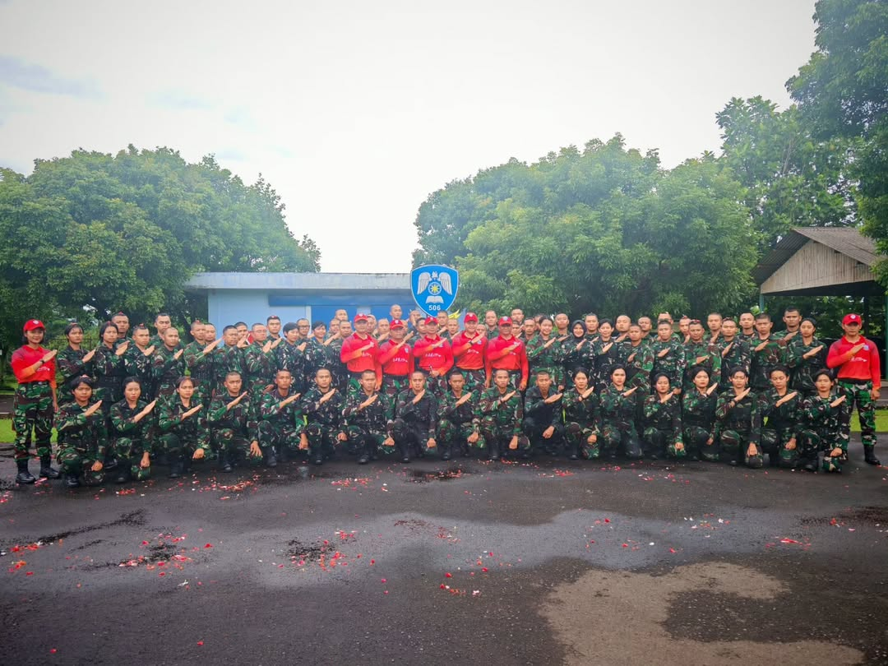

12 JANUARI 2026
Penutupan Orientasi Lapangan Siswa Sesarcabjur Siber TNI A-2
Masa orientasi diikuti oleh 73 orang siswa yang bertujuan untuk memperkenalkan kepada siswa, lingkungan disekitar Lanud Atang Sendjaja.
Baca Selengkapnya